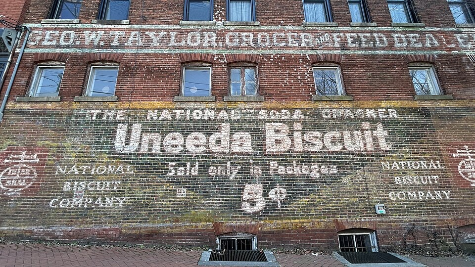
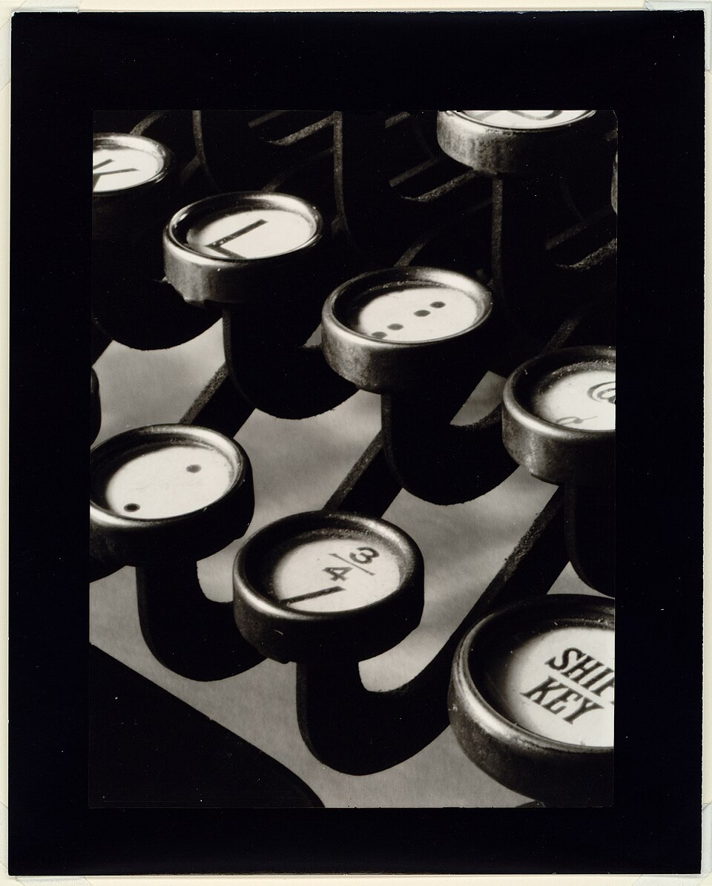
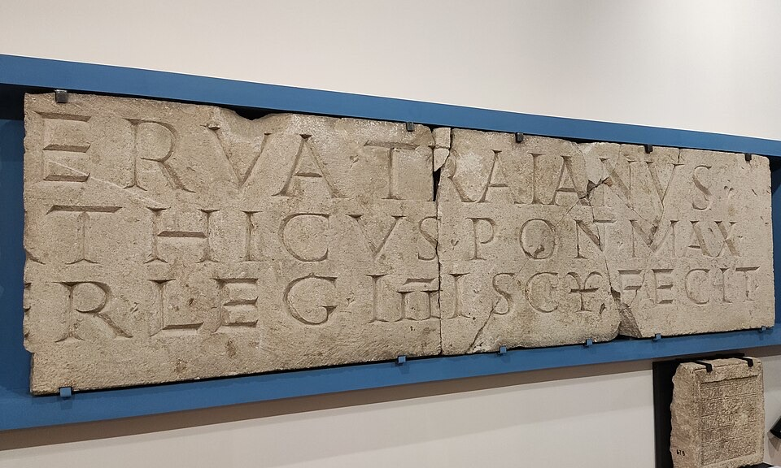
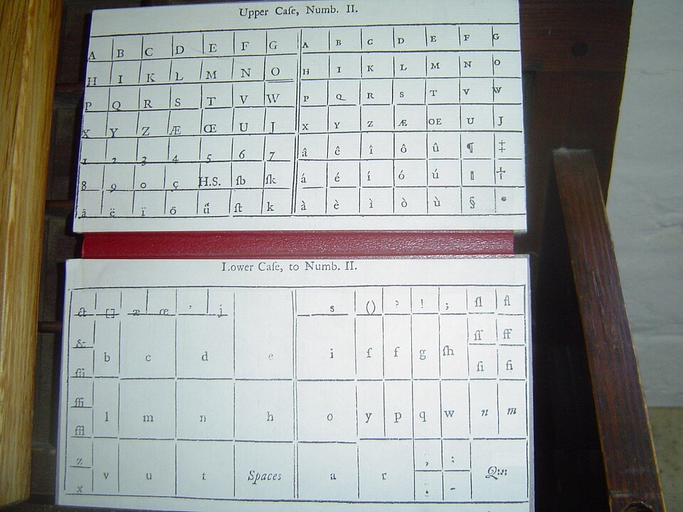
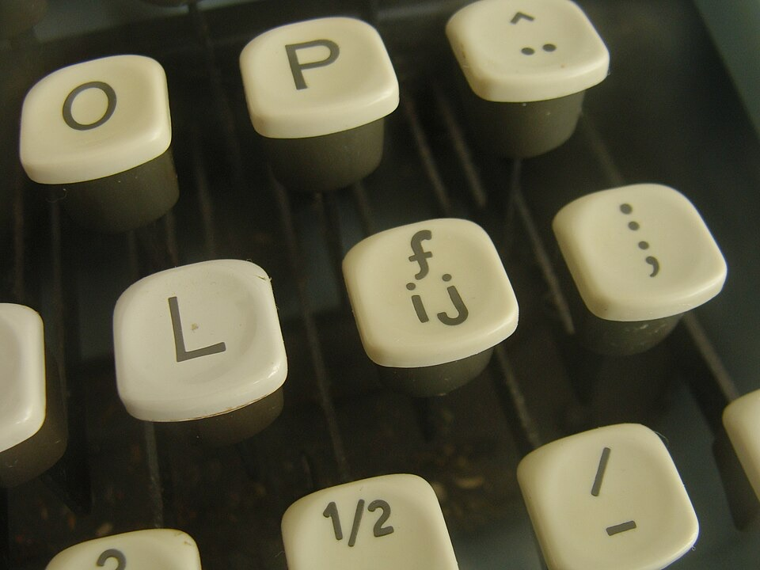
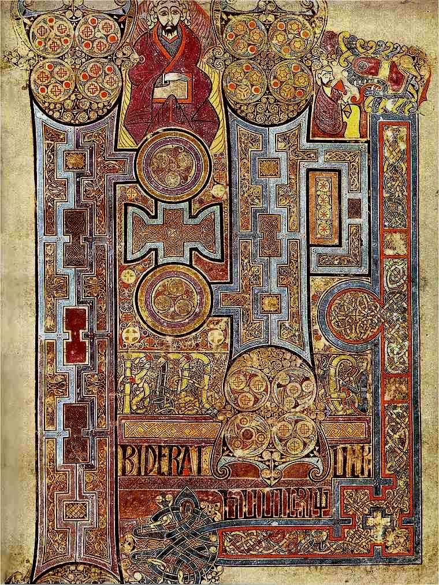

Typographic Anomalies

Skeptics, sit down. Below are TWELVE pieces of evidence. The first six I drew from memory, the very night I saw them. The second six are real photographs, so don't even try it. Each one is 100% real and definitely proof of alien life. No human could kern this well. Click any picture to see it BIG.
WARNING: Do not stare at Exhibit A for more than 30 seconds.
 Exhibit A: The 27th Letter Appeared on my practice sheet overnight, between M and N. It blinked. I am almost sure it blinked. |
 Exhibit B: The Wiltshire Q A crop circle with a TAIL. Bracketed, tapered, Old Style. Farmers do not know what a bracketed serif is. |
 Exhibit C: The Growing Pencil Went into the sharpener. Came out longer. Writes in a green that is not on any crayon box I own. |
 Exhibit D: The Eraser Message I erased a BLANK page in the dark and it left glowing script behind. Lovely letterforms, honestly. |
 Exhibit E: The Beamed Ligature Saw this over the Kmart parking lot. Two loose letters went up, one ligature came down. |
 Exhibit F: Moon Kerning Measured through my telescope with a ruler taped to the lens. Same gap every time. Explain THAT, NASA. |

Part Two: Photographic Evidence
Real photos. Real objects. You can go and look at most of them yourself.
The "experts" have their boring explanations, and I've printed those too, in purple,
so you can see how they're covering it up.
 Exhibit G: The Uneeda Signal This paint is not fading. The letters are being beamed up a few molecules every night. Look at "Uneeda" and say it slowly. You. Need. A. And then what?? They never finish the sentence. Also, 5¢ was the going rate for one Earthling in 1899. The boring version: an old painted advertisement for a biscuit, slowly weathering off the bricks. |
 Exhibit H: The Star Map Keys Two dots. Three dots. Those aren't punctuation, friend, those are STAR CHARTS. The three-dot key is Orion's Belt, plain as day. And notice the SHIFT KEY at the bottom, waiting. Shift into WHAT? The boring version: an art photograph of typewriter keys taken in the 1920s. |
 Exhibit I: The Roman Stencil Look at those capitals. Perfect. With CHISELS? In 116 A.D.?? Somebody lent the Romans a stencil. And the crack straight down the middle is exactly where the saucer touched down to take it back. The last word says FECIT, "it made it." What is IT? The boring version: a Latin building inscription naming the Emperor Trajan and a Roman legion, carved in 116 A.D. |
 Exhibit J: The Pickup Chart Why do capitals live in the UPPER case? Closer to the sky. Easier pickup. And why is the box marked "Spaces" bigger than any letter? Spaces are what they EAT. Last of all, see the little box marked "Q:u." The Q is never allowed out without its u. That is a HOSTAGE situation. The boring version: the layout labels for the two cases of metal type at an 18th-century printing shop. |
 Exhibit K: The Ambassador Key Look at the middle key. Two tiny beings with round heads (the dots!!), holding hands, standing under the curly symbol of their home world. Every other key has a letter on it. This one has VISITORS. It is the only key I know of with a built-in welcoming committee. The boring version: a Dutch typewriter key for the florin sign and the "ij" letter pair. |
 Exhibit L: The Monks' Wiring Diagram The finest calligraphy in history, and I say that as an EXPERT. But squint. It's a circuit board. The triple spirals are warp coils, the knots are cables, and the little guy in the top right corner is holding something long and pointy. A No. 2, I'd bet my life on it. The boring version: the opening page of the Gospel of John in the Book of Kells, an Irish manuscript from around 800 A.D. |

Got an anomaly of your own? Write it down (neatly!!) and send it to the Mothership. The best ones go up here with your name on them.

Back to the Mothership
Photo credits (all public domain or CC0, from Wikimedia Commons)
Exhibit G: "Uneeda Biscuit ghost sign" by pole.johnj, CC0
Exhibit H: "Typewriter keys" by Ralph Steiner, Library of Congress, public domain
Exhibit I: "Trajan inscription, Artaxata, Armenia" by Yerevantsi, CC0
Exhibit J: "UPPER CASE - lower case" by Doug Coldwell, public domain
Exhibit K: "Florin sign and ij digraph on Dutch typewriter" by Paul B, CC0
Exhibit L: Book of Kells, folio 292r, Trinity College Dublin, public domain
www.geocities.com/Area51/Meteor/2178/gallery.html
No anomalies were faked in the making of this page. That we know of.